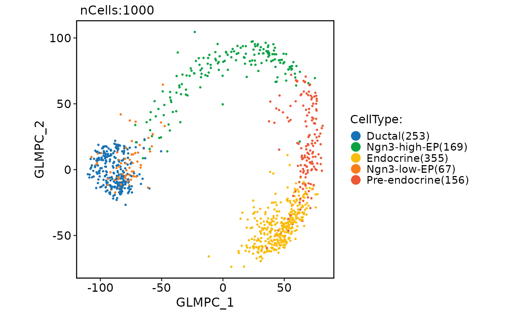

Run generalized principal components analysis (GLMPCA)
Usage
RunGLMPCA(object, ...)
# S3 method for class 'Seurat'
RunGLMPCA(
object,
assay = NULL,
layer = "counts",
features = NULL,
L = 5,
fam = c("poi", "nb", "nb2", "binom", "mult", "bern"),
rev.gmlpca = FALSE,
ndims.print = 1:5,
nfeatures.print = 30,
reduction.name = "glmpca",
reduction.key = "GLMPC_",
verbose = TRUE,
seed.use = 11,
...
)
# S3 method for class 'Assay'
RunGLMPCA(
object,
assay = NULL,
layer = "counts",
features = NULL,
L = 5,
fam = c("poi", "nb", "nb2", "binom", "mult", "bern"),
rev.gmlpca = FALSE,
ndims.print = 1:5,
nfeatures.print = 30,
reduction.key = "GLMPC_",
verbose = TRUE,
seed.use = 11,
...
)
# S3 method for class 'Assay5'
RunGLMPCA(
object,
assay = NULL,
layer = "counts",
features = NULL,
L = 5,
fam = c("poi", "nb", "nb2", "binom", "mult", "bern"),
rev.gmlpca = FALSE,
ndims.print = 1:5,
nfeatures.print = 30,
reduction.key = "GLMPC_",
verbose = TRUE,
seed.use = 11,
...
)
# Default S3 method
RunGLMPCA(
object,
assay = NULL,
layer = "counts",
features = NULL,
L = 5,
fam = c("poi", "nb", "nb2", "binom", "mult", "bern"),
rev.gmlpca = FALSE,
ndims.print = 1:5,
nfeatures.print = 30,
reduction.key = "GLMPC_",
verbose = TRUE,
seed.use = 11,
...
)Arguments
- object
An object. Can be a Seurat object, an assay object, or a matrix-like object.
- ...
Additional arguments to be passed to the glmpca::glmpca function.
- assay
Which assay to use. If
NULL, the default assay of the Seurat object will be used.- layer
Which layer to use. Default is
data.- features
A character vector of features to use. Default is
NULL.- L
The number of components to be computed. Default is
5.- fam
The family of the generalized linear model to be used. Currently supported values are
"poi","nb","nb2","binom","mult", and"bern". Default is"poi".- rev.gmlpca
Whether to perform reverse GLMPCA (i.e., transpose the input matrix) before running the analysis. Default is
FALSE.- ndims.print
The dimensions (number of components) to print in the output. Default is
1:5.- nfeatures.print
The number of features to print in the output. Default is
30.- reduction.name
The name of the reduction to be stored in the Seurat object. Default is
"glmpca".- reduction.key
The prefix for the column names of the basis vectors. Default is
"GLMPC_".- verbose
Whether to print the message. Default is
TRUE.- seed.use
Random seed for reproducibility. Default is
11.
Examples
data(pancreas_sub)
pancreas_sub <- standard_scop(pancreas_sub)
#> ℹ [2026-01-29 13:24:55] Start standard scop workflow...
#> ℹ [2026-01-29 13:24:56] Checking a list of <Seurat>...
#> ! [2026-01-29 13:24:56] Data 1/1 of the `srt_list` is "unknown"
#> ℹ [2026-01-29 13:24:56] Perform `NormalizeData()` with `normalization.method = 'LogNormalize'` on the data 1/1 of the `srt_list`...
#> ℹ [2026-01-29 13:24:58] Perform `Seurat::FindVariableFeatures()` on the data 1/1 of the `srt_list`...
#> ℹ [2026-01-29 13:24:59] Use the separate HVF from srt_list
#> ℹ [2026-01-29 13:24:59] Number of available HVF: 2000
#> ℹ [2026-01-29 13:24:59] Finished check
#> ℹ [2026-01-29 13:24:59] Perform `Seurat::ScaleData()`
#> ℹ [2026-01-29 13:24:59] Perform pca linear dimension reduction
#> ℹ [2026-01-29 13:25:00] Perform `Seurat::FindClusters()` with `cluster_algorithm = 'louvain'` and `cluster_resolution = 0.6`
#> ℹ [2026-01-29 13:25:00] Reorder clusters...
#> ℹ [2026-01-29 13:25:01] Perform umap nonlinear dimension reduction
#> ℹ [2026-01-29 13:25:01] Non-linear dimensionality reduction (umap) using (Standardpca) dims (1-50) as input
#> ℹ [2026-01-29 13:25:05] Non-linear dimensionality reduction (umap) using (Standardpca) dims (1-50) as input
#> ✔ [2026-01-29 13:25:09] Run scop standard workflow completed
pancreas_sub <- RunGLMPCA(pancreas_sub)
#> ℹ GLMPC_ 1
#> ℹ Positive: Barx2, Cartpt, Ptger3, Gm3448, Cypt3, Kng2, Gad1, 3930402G23Rik, Mesp1, Il1r2
#> ℹ Dusp26, Cdkn2b, Aard, Platr26, Prl, Ucn3, Slc38a5, Pcdh8, Lrrc6, 4930426D05Rik
#> ℹ Ky, Ctxn2, Pax6os1, Msx1, A930017K11Rik, 1700001C02Rik, Ifit1bl1, RP23-385E22.2, Gm933, Gm6086
#> ℹ Negative: Col6a1, Sparcl1, Col23a1, Hoxb4, Col1a1, Galnt16, Ctgf, Zfp385b, Col1a2, Islr
#> ℹ Isg15, Pmp22, P2ry2, Platr22, Plscr2, Gm6878, Gm26633, Kcnj8, Smpx, A730098A19Rik
#> ℹ Col3a1, Gm15640, Aif1, Ctsk, Cdkn2c, Peg12, Olfml2a, Krt20, Tnni3, Tnfrsf19
#> ℹ GLMPC_ 2
#> ℹ Positive: Ncf2, Lmx1a, Cmklr1, Tgm7, Pthlh, Nhlh1, 1520401A03Rik, Gm15567, Lipg, Epb42
#> ℹ Adgrb1, Sema3g, Gm16140, Slc52a3, Neurog3, 1700128E19Rik, Crlf1, Notum, Acot11, Siglece
#> ℹ Eya2, Neurod2, Laptm5, Prom2, Gm8773, Fgf18, Wnt3, Bhlhe22, Megf11, Rasgrp3
#> ℹ Negative: Sst, Dkk2, Klhl14, Aif1, RP23-428N8.3, 4930539E08Rik, Ctsk, Fgb, Tnni3, Col1a2
#> ℹ Ctgf, Tac1, Tstd1, Col25a1, Col6a1, Col23a1, Lgr5, Crygn, Sparcl1, Nov
#> ℹ Ppy, 4930426D05Rik, Pyy, Otc, Hoxb4, Zfp385b, Sp140, Cbln4, Ceacam10, Gm26633
#> ℹ GLMPC_ 3
#> ℹ Positive: Gtf2ird2, Fam198b, Tac1, 4933440M02Rik, Tstd1, 1700015F17Rik, Sst, Cbln1, Pkd2l1, Lmx1a
#> ℹ Slc4a10, Ctsk, RP23-58K20.3, 4430402I18Rik, Gm10382, Igfbp3, Klhl14, Gm15895, Fcgr3, 4930539E08Rik
#> ℹ Lst1, Cdc25c, Kif2c, Lgr5, Cenpf, Ankrd1, Icosl, Slfn2, Srgn, D7Ertd443e
#> ℹ Negative: Kcnj8, Cbln4, Col3a1, Sparcl1, Gm15640, Islr, Col5a1, Col1a1, Ghrl, Tex36
#> ℹ Npy, Guca2a, Col1a2, Galnt16, Col23a1, Sapcd1, Foxd3, Col6a1, Tmem119, L1td1
#> ℹ Gm38112, Ptpro, Olfml3, Tmtc1, Irs4, Tagln, Lrrtm3, Cxcl16, Lsp1, Nid1
#> ℹ GLMPC_ 4
#> ℹ Positive: Npy, Aif1, Gm38112, Cldn18, Dlgap1, Rac2, Ins2, Gm11789, Ins1, Syndig1l
#> ℹ Sp5, Hist1h1a, Gm15640, Col25a1, P2ry14, Slfn2, Tmem215, Sst, Gip, Cbln4
#> ℹ 1700024G13Rik, Iqgap3, P2ry1, Pif1, Gm933, Adam32, Ifitm1, RP23-58K20.3, Pf4, Hist1h1b
#> ℹ Negative: Sp140, Gast, Tstd1, Tnfaip8l3, D7Ertd443e, Fam46d, Lmod3, Rerg, 1500035N22Rik, Guca2a
#> ℹ Arhgap22, Pou6f2, Gm29440, RP23-385E22.2, Snai2, Irs4, Plbd1, Calb1, Ctsk, Nrn1
#> ℹ Gcg, Anxa1, Nxph1, Smpx, Ngf, Bhlhe23, Gm13375, Oasl2, 1110002O04Rik, Bmp2
#> ℹ GLMPC_ 5
#> ℹ Positive: Cxcl10, Rac2, Srgn, Kcne2, Fcgr3, Sst, Ccl20, Anxa1, Aif1, Krt17
#> ℹ Tyrobp, Elovl4, Ltb, Plaur, Tex36, P2ry14, Itgb7, Lst1, Tmem100, Cyp11a1
#> ℹ Tnni3, Gm933, Cpa3, Gm17455, Cxcl16, Bmp2, Cd37, Arhgap22, Lrrtm3, Gpr6
#> ℹ Negative: Gad2, Sparcl1, 4933440M02Rik, Gcg, Galnt16, Oasl2, Islr, Col6a1, Hoxb4, Col1a2
#> ℹ Gsg1l, Nhs, Gm6878, Calb1, Col1a1, Lgr5, Ryr3, Ins1, Rspo1, Cdkn2c
#> ℹ 4930539E08Rik, Tmem119, Pid1, Pmp22, Lmx1a, Ska3, Pkd2l1, Aspm, Tmem255b, Fam71b
CellDimPlot(
pancreas_sub,
group.by = "CellType",
reduction = "glmpca"
)
